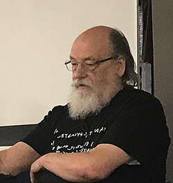
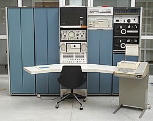
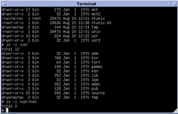
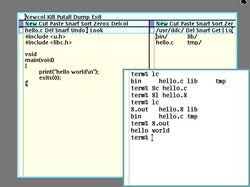

Ken Thompson | |
|---|---|
 Thompson in 2019 | |
| Born | Kenneth Lane Thompson February 4, 1943 New Orleans, Louisiana, U.S. |
| Education | University of California, Berkeley (BS, MS) |
| Known for | |
| Awards |
|
| Scientific career | |
| Fields | Computer science |
| Institutions | |
| Website | http://cs.bell-labs.co/who/ken/ |
Kenneth Lane Thompson (born February 4, 1943) is an American pioneer of computer science. Thompson worked at Bell Labs for most of his career where he designed and implemented the original Unix operating system. He also invented the B programming language, the direct predecessor to the C language, and was one of the creators and early developers of the Plan 9 operating system. Other notable contributions included his work on regular expressions and early computer text editors QED and ed, the definition of the UTF-8 encoding, and his work on computer chess that included the creation of endgame tablebases and the chess machine Belle.
Since 2006, Thompson has worked at Google, where he co-developed the Go language. In 1983, he won the Turing Award with his long-term colleague Dennis Ritchie.[3] He is considered one of the greatest computer programmers of all time.[4][5][6]
Thompson was born in New Orleans, Louisiana. When asked how he learned to program, Thompson stated, "I was always fascinated with logic and even in grade school I'd work on arithmetic problems in binary, stuff like that. Just because I was fascinated."[7]

Thompson received a Bachelor of Science in 1965 and a master's degree in 1966, both in electrical engineering and computer sciences, from the University of California, Berkeley, where his master's thesis advisor was Elwyn Berlekamp.[8]
Thompson was hired by Bell Labs in 1966.[9] In the 1960s at Bell Labs, Thompson and Dennis Ritchie worked on the Multics operating system. While writing Multics, Thompson created the Bon programming language.[10][11] He also created a video game called Space Travel. Later, Bell Labs withdrew from the MULTICS project.[12] In order to go on playing the game, Thompson found an old PDP-7 machine and rewrote Space Travel on it.[13] Eventually, the tools developed by Thompson became the Unix operating system: Working on a PDP-7, a team of Bell Labs researchers led by Thompson and Ritchie, and including Rudd Canaday, developed a hierarchical file system, the concepts of computer processes and device files, a command-line interpreter, pipes for easy inter-process communication, and some small utility programs. In 1970, Brian Kernighan suggested the name "Unix", in a pun on the name "Multics".[14] After initial work on Unix, Thompson decided that Unix needed a system programming language and created B, a precursor to Ritchie's C.[11]
In the 1960s, Thompson also began work on regular expressions. Thompson had developed the CTSS version of the editor QED, which included regular expressions for searching text. QED and Thompson's later editor ed (the standard text editor on Unix) contributed greatly to the eventual popularity of regular expressions, and regular expressions became pervasive in Unix text processing programs. Almost all programs that work with regular expressions today use some variant of Thompson's notation. He also invented Thompson's construction algorithm used for converting regular expressions into nondeterministic finite automata in order to make expression matching faster.[15]

Throughout the 1970s, Thompson and Ritchie collaborated on the Unix operating system; they were so prolific on Research Unix that Doug McIlroy later wrote, "The names of Ritchie and Thompson may safely be assumed to be attached to almost everything not otherwise attributed."[16] In a 2011 interview, Thompson stated that the first versions of Unix were written by him, and that Ritchie began to advocate for the system and helped to develop it:[17]
I did the first of two or three versions of UNIX all alone. And Dennis became an evangelist. Then there was a rewrite in a higher-level language that would come to be called C. He worked mostly on the language and on the I/O system, and I worked on all the rest of the operating system. That was for the PDP-11, which was serendipitous, because that was the computer that took over the academic community.
Feedback from Thompson's Unix development was also instrumental in the development of the C programming language. Thompson would later say that the C language "grew up with one of the rewritings of the system and, as such, it became perfect for writing systems".[17]
In 1975, Thompson took a sabbatical from Bell Labs and went to his alma mater, UC Berkeley. There, he helped to install Version 6 Unix on a PDP-11/70. Unix at Berkeley would later become maintained as its own system, known as the Berkeley Software Distribution (BSD).[18]
In early 1976, Thompson wrote the initial version of Berkeley Pascal at the Computer Science Division, Department of Electrical Engineering and Computer Science, UC Berkeley (with extensive modifications and additions following later that year by William Joy, Charles B. Haley[19][20][21] and faculty advisor Susan Graham).
Thompson wrote a chess-playing program called "chess" for the first version of Unix (1971).[22] Later, along with Joseph Condon, Thompson created the hardware-assisted program Belle, a world champion chess computer.[23] He also wrote programs for generating the complete enumeration of chess endings, known as endgame tablebases, for all 4, 5, and 6-piece endings, allowing chess-playing computer programs to make "perfect" moves once a position stored in them is reached. Later, with the help of chess endgame expert John Roycroft, Thompson distributed his first results on CD-ROM. In 2001, the ICGA Journal devoted almost an entire issue to Thompson's various contributions to computer chess.[22]

In 1983, Thompson and Ritchie jointly received the Turing Award "for their development of generic operating systems theory and specifically for the implementation of the UNIX operating system". His acceptance speech, "Reflections on Trusting Trust", presented the persistent compiler backdoor attack now known as the Thompson hack or trusting trust attack, and is widely considered a seminal computer security work in its own right.[24] In 2023, the backdoor's annotated source code was published online.[25] The end of the acceptance speech consisted of criticism of journalists' positive coverage of hackers, such as the 414s.
A defence against the "Thompson hack" was developed by David A. Wheeler. It uses a technique called diverse double compilation to circumvent the hack by creating and comparing reproducible builds.[26]
Throughout the 1980s, Thompson and Ritchie continued revising Research Unix, which adopted a BSD codebase for the 8th, 9th, and 10th editions. In the mid-1980s, work began at Bell Labs on a new operating system as a replacement for Unix. Thompson was instrumental in the design and implementation of the Plan 9 from Bell Labs, a new operating system utilizing principles of Unix, but applying them more broadly to all major system facilities. Some programs that were part of later versions of Research Unix, such as mk and rc, were also incorporated into Plan 9.
Thompson tested early versions of the C++ programming language for Bjarne Stroustrup by writing programs in it, but later refused to work in C++ due to frequent incompatibilities between versions. In a 2009 interview, Thompson expressed a negative view of C++, stating, "It does a lot of things half well and it's just a garbage heap of ideas that are mutually exclusive."[27]
In 1992, Thompson developed the UTF-8 encoding scheme together with Rob Pike.[28] UTF-8 has since become the dominant Unicode encoding form for the World Wide Web, accounting for more than 90% of all web pages in 2019.[29]
In the 1990s, work began on the Inferno operating system, another research operating system that was based around a portable virtual machine. Thompson and Ritchie continued their collaboration with Inferno, along with other researchers at Bell Labs.[30]
In 1995, Thompson collaborated on music compression with Sean Dorward, based on original research work done by Jim Johnston, under the guidance of Joe Hall and Jont Allen.[31][32]
In late 2000, Thompson retired from Bell Labs.
In 2004, he assisted in the implementation of Turochamp, a chess program Alan Turing devised in 1948, before any computers existed that could execute it.[33]
He worked at Entrisphere, Inc. as a fellow until 2006.
As of 2024 he works at Google, first as a Distinguished Engineer and later as a Google Advisor.[34] Recent work has included the co-design of the Go programming language. Referring to himself along with the other original authors of Go, he states:[17]
When the three of us [Thompson, Rob Pike, and Robert Griesemer] got started, it was pure research. The three of us got together and decided that we hated C++. [laughter] ... [Returning to Go,] we started off with the idea that all three of us had to be talked into every feature in the language, so there was no extraneous garbage put into the language for any reason.
In 1980, Thompson was elected to the National Academy of Engineering for "designing UNIX, an operating system whose efficiency, breadth, power, and style have guided a generation's exploitation of minicomputers".[35] In 1985 he was elected a Member of the National Academy of Sciences.[2]
In 1983, Thompson and Ritchie jointly received the Turing Award "for their development of generic operating systems theory and specifically for the implementation of the UNIX operating system". In his acceptance speech, "Reflections on Trusting Trust", Thompson outlined an attack in the form of a compiler backdoor that has been referred to as the Thompson hack or the trusting trust attack, and is widely considered a seminal computer security work in its own right.[24]
In 1990, both Thompson and Dennis Ritchie received the IEEE Richard W. Hamming Medal from the Institute of Electrical and Electronics Engineers (IEEE), "for the origination of the UNIX operating system and the C programming language".[36]
In 1997, both Thompson and Ritchie were inducted as Fellows of the Computer History Museum for "the co-creation of the UNIX operating system, and for development of the C programming language".[37] In 2024, he recorded an extensive oral history for the museum.[38]
On April 27, 1999, Thompson and Ritchie jointly received the 1998 National Medal of Technology from President Bill Clinton for co-inventing the UNIX operating system and the C programming language which together have "led to enormous advances in computer hardware, software, and networking systems and stimulated growth of an entire industry, thereby enhancing American leadership in the Information Age".[39]
In 1999, the Institute of Electrical and Electronics Engineers chose Thompson to receive the first Tsutomu Kanai Award "for his role in creating the UNIX operating system, which for decades has been a key platform for distributed systems work".[40]
In 2011, Thompson, along with Dennis Ritchie, was awarded the Japan Prize for Information and Communications for the pioneering work in the development of the Unix operating system.[41]
Ken Thompson is married and has a son.[9][22] He was a user of Apple products but later switched to Raspberry Pi OS due to issues he faced with Apple products.[42]
Sources
{kind=link}
{kind=link}
{kind=link}
.png){kind=link}